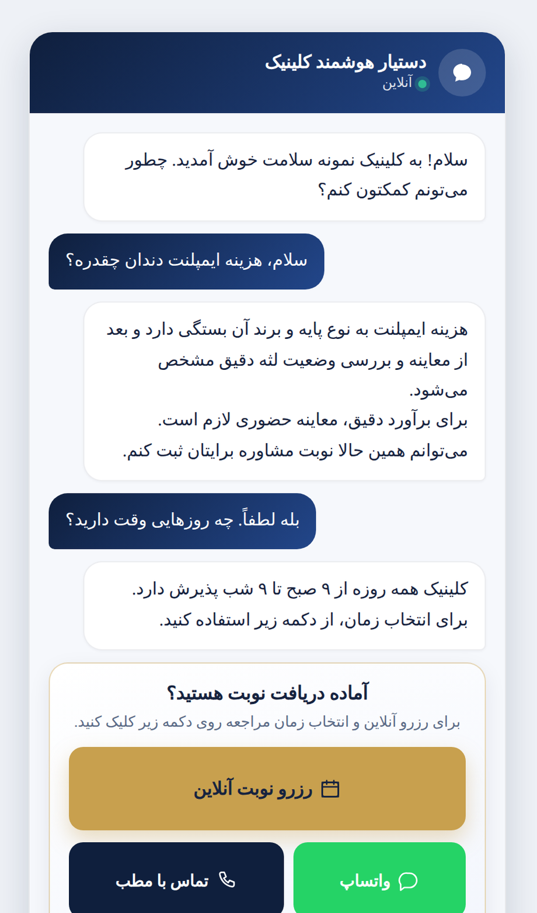
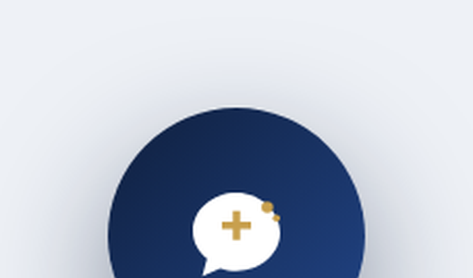
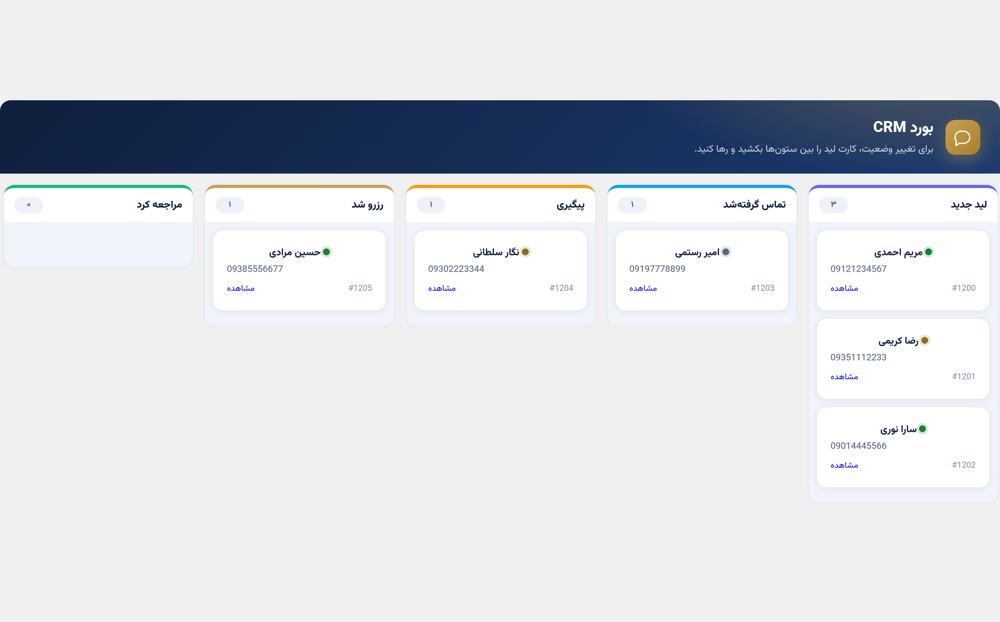
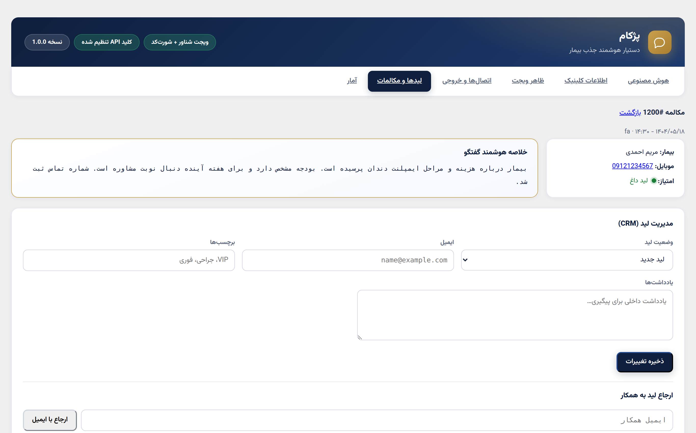
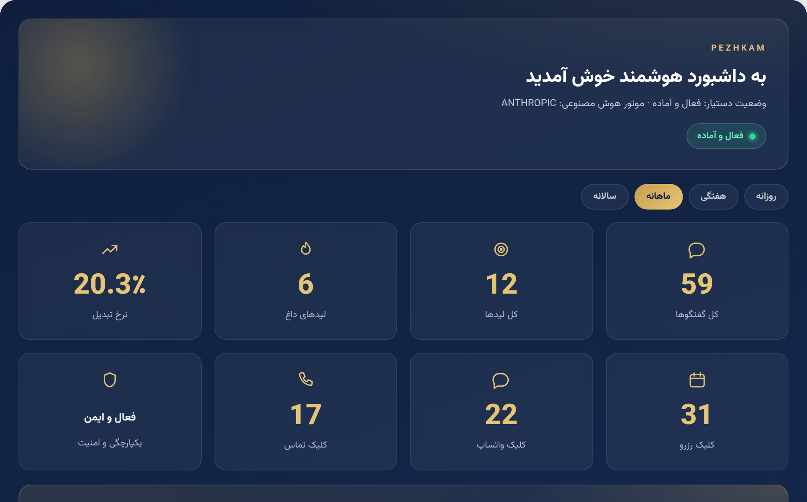
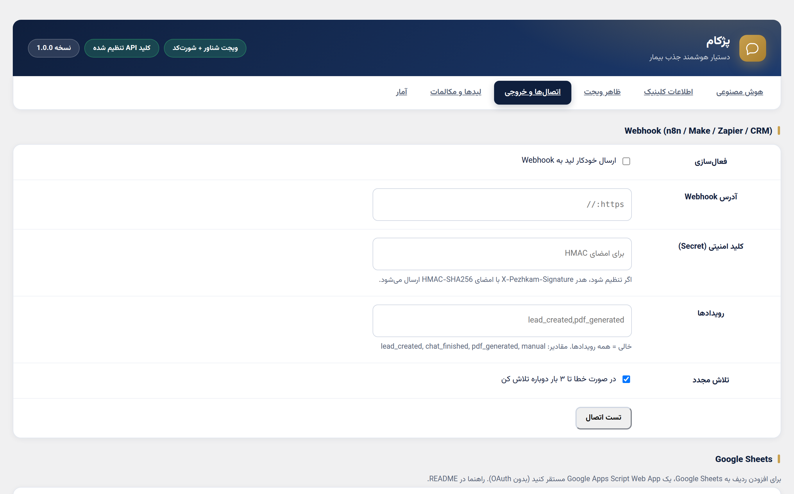
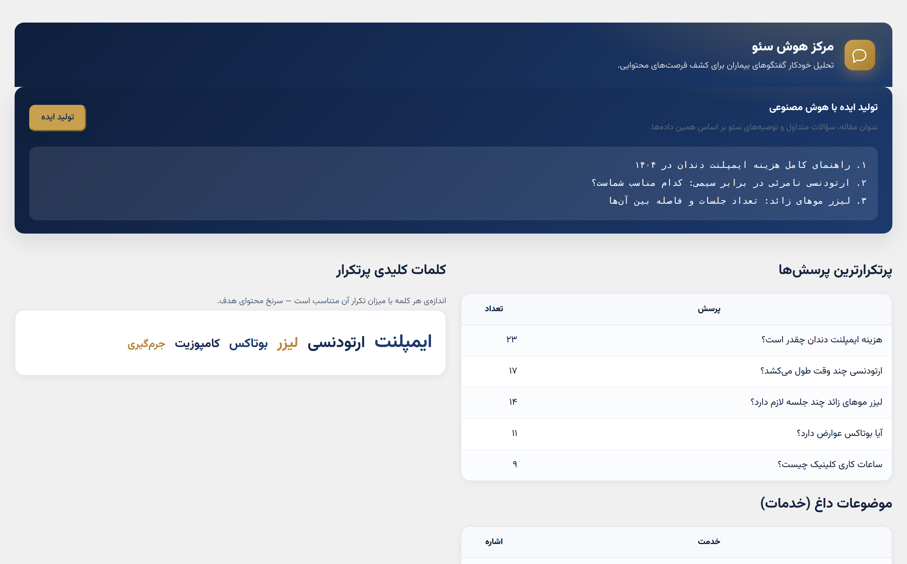
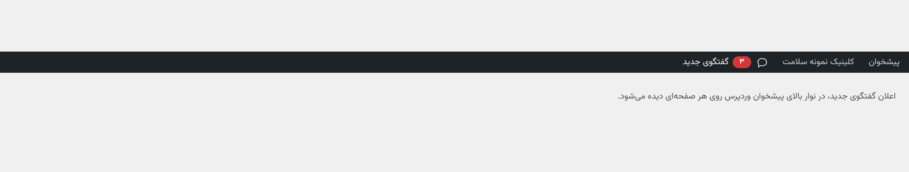

بیشتر بازدیدکنندگان سایت شما خارج از ساعت کاری میآیند؛ سؤال دارند، پاسخی نمیگیرند و میروند. پژکام همان لحظه به زبان فارسی جوابشان را میدهد، شمارهشان را میگیرد و آنها را به نوبت تبدیل میکند.

سه نشتی خاموش که هر روز برای کلینیکها هزینه میسازد:
بیمار شب یا آخر هفته سؤال میپرسد، کسی نیست جواب بدهد؛ او هم سراغ کلینیکی میرود که جواب میدهد.
بازدیدکنندهای که مردد بود و رفت، هیچ ردی از خودش نمیگذارد — نه شمارهای، نه نامی، نه فرصتی برای پیگیری.
نمیدانید بیماران واقعاً چه میپرسند؛ پس محتوای سایت و استراتژی سئو بر پایه حدس نوشته میشود.
پژکام هر سه نشتی را با یک افزونه میبندد: پاسخ فوری، ثبت لید، و تحلیل گفتگوها.
از اولین «سلام» بازدیدکننده تا ثبت نوبت — همهچیز داخل همین افزونه.
موتور گفتگوی پژکام برای فضای درمانی ایران ساخته شده؛ نه یک چتبات عمومی ترجمهشده.

جذب لید در پژکام بخشی از خودِ گفتگو است، نه یک فرم خشک و آزاردهنده.

بدون نیاز به نرمافزار جداگانه؛ CRM سبک و تخصصی مطب، داخل همان پیشخوان وردپرس.

وقتی بیمار آماده است، هر ثانیه مهم است؛ ارجاع در پژکام چند ثانیه بیشتر طول نمیکشد.
داشبورد لوکس پژکام فقط عدد نشان نمیدهد؛ ارزش ریالی کار افزونه را هم برآورد میکند.


فقط APIKey پنلتان را وارد کنید؛ بقیه کارها با پژکام است.

هر گفتگو یک دادهی سئو است؛ پژکام این دادهها را برایتان به نقشه محتوا تبدیل میکند.

از پیشخوان وردپرس تا گروه تلگرام کلینیک — خبر لید جدید همان لحظه میرسد.
هرگز تشخیص قطعی یا تجویز دارو نمیدهد و همیشه به ویزیت حضوری ارجاع میدهد. کنترل دولایه: هم در دستور سیستمی، هم در فیلتر خروجی — حتی اگر مدل خطا کند، فیلتر دوم میگیرد.
در موارد اضطراری فوراً شماره اورژانس را نمایش میدهد و گفتگوی هوش مصنوعی را متوقف میکند؛ به پاسخهای مرتبط با علائم نیز دیسکلیمر پزشکی اضافه میشود.
کلیدهای API با AES-256-GCM رمزنگاری میشوند؛ nonce و سطح دسترسی روی همه درخواستها، محدودیت نرخ، قفل ضد brute-force و لاگ امنیتی کامل.
بدون jQuery؛ فایلهای JS و CSS فقط در صفحات لازم لود میشوند — سرعت سایت شما دستنخورده میماند.
هندل حرفهای کیبورد موبایل بدون پرش صفحه؛ سازگار با iOS و Android. شورتکد [pezhkam_chat] برای چت درونصفحهای در سایدبار یا هر برگه.
خروجی PDF از پرونده هر لید، Webhook امضاشده به n8n / Make / Zapier با تلاش مجدد خودکار، و ثبت خودکار لیدها در Google Sheets — همراه دکمه تست اتصال و لاگ کامل.
بیمار وارد سایت میشود؛ حباب دعوت با صدای لطیف خوشآمد میگوید.
هوش مصنوعی به سؤالات هزینه، خدمات و آمادگی پاسخ میدهد.
نام و موبایل بهصورت طبیعی در دل چت دریافت و امتیازدهی میشود.
کارت لید همان لحظه به پیشخوان، بله یا تلگرام تیم میرسد.
لید در پایپلاین پیگیری میشود؛ ارجاع به همکار با یک کلیک.
بیمار رزرو میکند و داشبورد، ارزش ایجادشده را نشان میدهد.
چت ساده فقط پیام جابهجا میکند؛ پژکام بیمار میسازد.
| قابلیت | چت آنلاین معمولی | پژکام |
|---|---|---|
| پاسخگویی نیمهشب و تعطیلات | نیازمند اپراتور | هوش مصنوعی ۲۴ ساعته |
| ایمنی پزشکی (عدم تشخیص/تجویز) | ندارد | لایه دوگانه غیرقابلحذف |
| ثبت و امتیازدهی خودکار لید | دستی | خودکار: داغ / متوسط / سرد |
| CRM و پایپلاین بیمار | نرمافزار جداگانه | داخل وردپرس |
| پیامک با پنلهای ایرانی | معمولاً افزونه پولی جدا | ۴ پنل ایرانی در همان لایسنس |
| کار روی هاست ایران بدون تحریمشکن | اغلب مشکلدار | با گیتوی GapGPT |
| تحلیل سئو از گفتگوهای واقعی | ندارد | مرکز هوش سئو + تولید ایده |
| برآورد درآمد تولیدشده | ندارد | در داشبورد مدیریتی |
پاسخ به سؤالات هزینه ایمپلنت و ارتودنسی، و تبدیل مراجعهکننده مردد به نوبت مشاوره.
حجم بالای سؤالات تکراری قیمت را هوش مصنوعی جواب میدهد؛ تیم فقط سراغ لیدهای داغ میرود.
راهنمایی آمادگی قبل از عمل و شرایط جراحی، با ارجاع همیشگی به ویزیت حضوری.
پاسخ محترمانه به سؤالات اولیه و دعوت به جلسه، بدون ورود به حیطه تشخیص.
انتساب لید به شعبه، آمار جداگانه هر شعبه و ارجاع به همکار همان شعبه.
پاسخ به شرایط ناشتایی و آمادگی آزمایشها، و راهنمایی ساعات پذیرش.